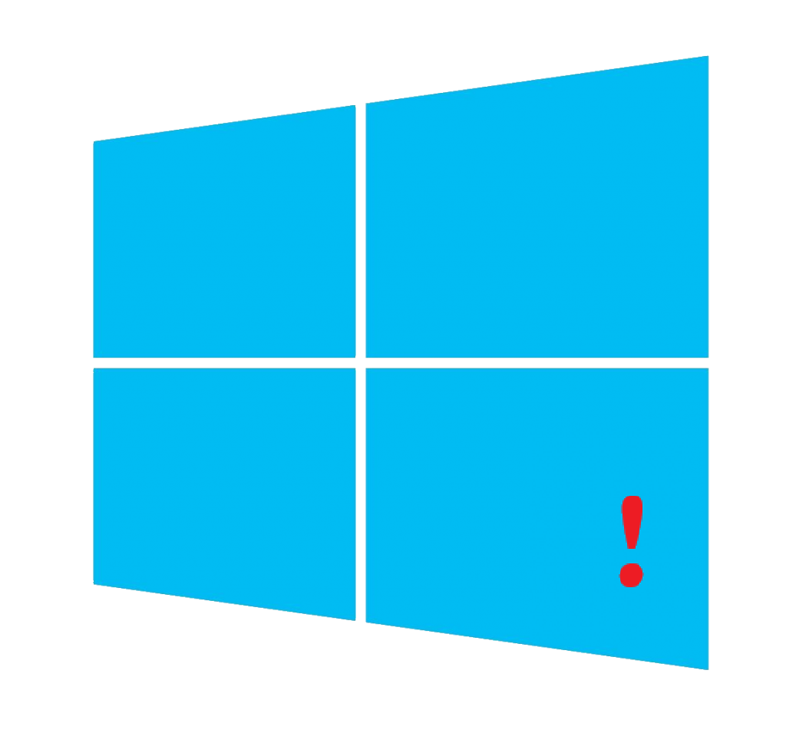

TheWinGO на основе Windows 10 22H2
Сборка с вырезанными ненужными элементами UWP, облегчённая 10 Pro, поставляется с папкой "Programs and Wallpapers" в которой есть установщики программ и выбор красивых обоев.Скачать

TheWinGO на основе Windows 10 22H2
Сборка с вырезанными ненужными элементами UWP, облегчённая 10 Pro, поставляется с папкой "Programs and Wallpapers" в которой есть установщики программ и выбор красивых обоев.Скачать

TheWin на основе Windows 10 22H2
Тоже самое что TheWinGO, но с присутствием всех UWP приложений, но нестабильной работой и проблемами, не рекомендуется.Скачать